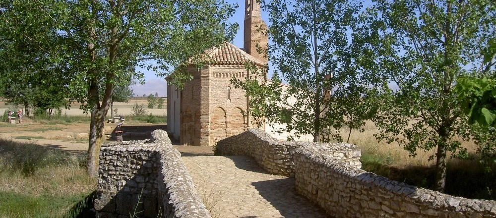
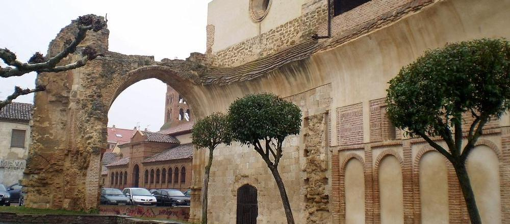

Sahagún
Sahagún es un municipio y villa española situada al sureste de la provincia de León, en la zona noroccidental de la comunidad autónoma de Castilla y León. Ubicada entre los ríos Cea y Valderaduey, se encuentra en la comarca Tierra de Sahagún, la cual comparte con otros municipios limítrofes como Cea, Grajal de Campos o Calzada del Coto. Es, además, cabeza de partido judicial.

Puente Canto
Cruce sobre el río Cea, parte del Camino de Santiago
Situada en las vegas del río Cea y del Valderaduey, nació a la sombra de un santuario dedicado a los mártires Facundo y Primitivo y se consolidó en el siglo XI con la llegada de la Orden de Cluny y la concesión del fuero a la villa por el rey Alfonso VI de León. Durante su reinado Sahagún ganó en importancia con el impulso dado a la ruta jacobea y la introducción en la península de los ritos y usos cluniacenses frente a los visigóticos, lo que propició el incremento del comercio y extendió la influencia de la villa sobre una extensa área geográfica. Después de mantener su importancia durante el medievo, la decadencia de la villa fue progresiva, acentuándose la misma por la desamortización de Mendizábal. En 1931 fue la segunda localidad española, después de Éibar, en proclamar la Segunda República.

Ermita de La Virgen del Puente
Primer monumento del Camino de Santiago que se ve al entrar en la provincia de León
Su patrimonio histórico y monumental, así como diversas celebraciones que tienen lugar a lo largo del año, entre las que destaca la Semana Santa, la convierten en una localidad receptora de turismo nacional e internacional. Entre sus monumentos más representativos se encuentran la Iglesia de San Lorenzo, la Iglesia de San Tirso, el Santuario de la Peregrina y las ruinas del Monasterio Real de San Benito, todos ellos declarados Bien de Interés Cultural.

Ruinas del antiguo monasterio
Entorno donde encontraremos la Capilla de San Mancio, Arco de San Benito e Iglesia de la Trinidad
Esa importancia cultural se ve acentuada por ser lugar de paso del Camino de Santiago y por pertenecer a la Federación de Lugares Cluniacenses. En 2009 la villa celebró el IX Centenario del fallecimiento del monarca Alfonso VI, motivo por el cual se llevaron a cabo diversas actividades conmemorativas en forma de congresos y publicaciones.


{kind=link}
{kind=link}
{kind=link}
{kind=link}
{kind=link}
{kind=link}